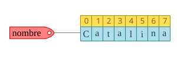
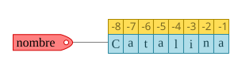
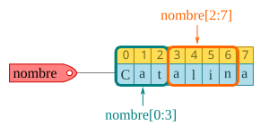
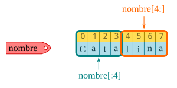
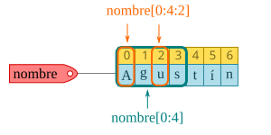
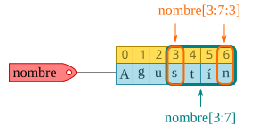

4. Cadenas de caracteres#
Las cadenas de caracteres (denominadas habitualmente y de manera indistinta como strings) son un tipo de dato que contiene una secuencia de símbolos, mismos que pueden ser alfanúmericos o cualquier otro símbolo propio de un sistema de escritura. En Python los strings se definen utilizando comillas dobles o simples. Observa los siguientes ejemplos:
nombre = "Catalina"
type(nombre)
str
apellido = 'Lara'
type(apellido)
str
Observa que es indistinto utilizar las comillas dobles o simples al momento de crear una cadena de caracteres. Si se requiere crear una cadena de caracteres multilínea, entonces se pueden definir utilizando un tres comillas dobles, tal como se muestra en el siguiente ejemplo:
en_paz = """
Muy cerca de mi ocaso, yo te bendigo, vida,
porque nunca me diste ni esperanza fallida,
ni trabajos injustos, ni pena inmerecida;
"""
type(en_paz)
str
La longitud o cantidad de elementos de una cadena se puede determinar utilizando la función len:
palabra = "Hola"
len(palabra)
4
Toma en cuenta que en una cadena de caracteres los espacios (y otros caracteres no visibles) también son parte de esta, y cuentan como un caracter, por ejemplo en la siguiente variable frase almacenamos la cadena "hola mundo", la cual contiene 9 letras y dos espacios: uno entre las dos palabras y otro al final, por lo cual la longitud total de la cadena es 11.
frase = "Hola mundo "
len(frase)
11
4.1. Concatenación y repetición de cadenas#
Para concatenar (unir) cadenas se puede utilizar el operador +. Observa el siguiente ejemplo en el cual se concatenan las cadenas "hola" y "mundo".
"Hola" + "mundo"
'Holamundo'
Notarás que Python por sí mismo no sabe que estamos uniendo dos palabras y que entre ellas debería haber un espacio para su correcta lectura, evidentemente este tipo de cuestiones son las que el programador debe tomar en cuenta al escribir un código. Si quisiéramos introducir un espacio entre las dos palabras podríamos añadirlo de forma manual en alguna de las cadenas, o como una tercera cadena intermedia, tal como se muestra enseguida:
"Hola" + " mundo"
'Hola mundo'
"Hola" + " " + "mundo"
'Hola mundo'
Otra manera de concatenar cadenas es utilizar el método join. Este método nos sirve para unir una lista de cadenas mediante un separador, por ejemplo:
primer_nombre = "Ana"
segundo_nombre = "Isabel"
separador = " "
separador.join( [primer_nombre, segundo_nombre] )
'Ana Isabel'
separador = "---"
separador.join( [primer_nombre, segundo_nombre] )
'Ana---Isabel'
La cantidad de cadenas a unir pueden ser más dos, observa el siguiente ejemplo:
", ".join(["Ana", "Jorge", "David", "José", "Juan"])
'Ana, Jorge, David, José, Juan'
Naturalmente, el separador puede ser cualquier caracter válido, incluyendo algunos poco usuales:
" \U0001F970 ".join(["Ana", "Jorge", "David", "José", "Juan"])
'Ana 🥰 Jorge 🥰 David 🥰 José 🥰 Juan'
Una cadena de caracteres se puede repetir una \(n\) cantidad de veces, para esto simplemente debemos multiplicar el entero correspondiente por la cadena, veamos el siguiente ejemplo:
"hola" * 10
'holaholaholaholaholaholaholaholaholahola'
Si quisiéramos dejar un espacio entre los "hola", entonces habría que dejar un espacio al final de la cadena:
"hola " * 5
'hola hola hola hola hola '
Obviamente el entero podría estar premultiplicando y seguiría funcionando:
37 * "-"
'-------------------------------------'
Evidentemente no podemos hacer uso de un número que no sea un entero, de lo contrario Python nos lanzará un TypeError:
1.5 * "abc"
---------------------------------------------------------------------------
TypeError Traceback (most recent call last)
Input In [22], in <cell line: 1>()
----> 1 1.5 * "abc"
TypeError: can't multiply sequence by non-int of type 'float'
Como puedes observar, Python únicamente puede multiplicar un dato de tipo entero (int) con una cadena de caracteres.
4.2. Indexación y slicing#
Las cadenas de caracteres son secuencias de elementos, donde cada elemento corresponde a un caracter específico. Cada elemento de la cadena tiene asociado un índice, el cual corresponde a la posición en que se encuentran, y por lo tanto serán enteros positivos. La numeración de los índices comienza en cero. En la figura se muestra una cadena de caracteres guardada en la variable nombre, podemos observar que a cada caracter le corresponde un índice. Por ejemplo, a la letra C le corresponde el índice 0, a la letra t el índice 2, y así de manera correspondiente con cada letra:

Se puede acceder a cada una de los símbolos que componen una cadena mediante la notación cadena[idx], donde cadena es el nombre de la cadena e idx el índice en que se encuentra el caracter al cual se desea acceder, siendo 0 para la primera letra, 1 para la segunda y así de manera consecutiva. Veamos el ejemplo descrito en la figura, primero creamos la cadena nombre:
nombre = "Catalina"
Si quisiéramos acceder a la letra C tendríamos que utilizar el índice 0, es decir:
nombre[0]
'C'
Para acceder a la letra t utilizaríamos el índice 2:
nombre[2]
't'
En las secuencias se pueden utilizar también índices negativos para acceder a los elementos. En este caso, el último elemento siempre tendrá asociado el índice -1 y a partir de ahí hacia la izquierda el índice de cada elemento adyacente disminuye una unidad, es decir, \(-1, -2, -3, -4, ..., -n\), donde \(n\) es el número de elementos de la secuencia. En la siguiente figura podemos observar los índices negativos asociados a cada elemento de la cadena almacenada en la variable nombre.

Así, si quisiéramos acceder al último elemento de dicha cadena, podríamos hacerlo utilizando el índice -1:
nombre[-1]
'a'
Es importante tener en cuenta que una cadena de caracteres no sólo está compuesta de símbolos alfanuméricos, sino también signos de puntuación o espacios en blanco o saltos de línea, etc. Vamos a crear una variable llamada frase, en la cual guardamos una cadena compuesta por dos palabras, separadas por un espacio.
frase = "Hola. Adiós."
Si accedemos al elemento en el índice 4, podemos observar que este corresponde al punto:
frase[4]
'.'
Ahora, si accedemos al elemento en el índice 5, veremos que el elemento correspondiente es el espacio:
frase[5]
' '
Ahora vamos a revisar una manera de acceder a una porción de una secuencia, no a un sólo elemento como lo hacemos con la indexación. Habitualmente se denomina slicing a este tipo de operación. Con la sintaxis cadena[a:b] podemos acceder al conjunto de caracteres comprendidos entre los índices a y b-1.
Observa la siguiente línea, la cual nos permite tomar los elementos con índices 0 y 1:
nombre[0:3] # Elementos 0, 1 y 2
'Cat'
Esta otra línea nos permite acceder a los elementos con índices 2, 3, 4, 5 y 6:
nombre[3:7] # elementos 3, 4, 5 y 6
'alin'
Cómo ya habrás notado la cuestión es simple e intuitiva, sólo debemos tener cuidado con la notación y recordar que no se incluye el elemento dado por el índice superior, sino hasta el correspondiente al índice inmediatamente anterior a este. En la siguiente figura puedes observar una representación gráfica de las dos operaciones de slicing anteriores.

Cuando se prescinde de uno de los índices en la notación de slicing, se asume que se toman todos los valores desde el inicio hasta el índice indicado menos uno; o bien desde el índice establecido hasta el final de la cadena; esto dependende, obviamente, del índice del cual se prescinda.
Por ejemplo, la siguiente línea toma los elementos desde el inicio de la cadena hasta el índice 4-1:
nombre[:4]
'Cata'
Esta otra línea toma los elementos desde el índice 4 hasta el final de la cadena.
nombre[4:]
'lina'
La siguiente imagen muestra una representación gráfica de lo descrito anteriormente.

De una cadena de caracteres también pueden obtenerse un conjunto de elementos sin tomarlos de uno en uno, sino cada dos, cada tres, etc. Si utilizamos la notación cadena[a:b:n], nos devolverá el conjunto de elementos comprendidos entre los índices a y b-1, tomados cada n elementos. Observa el siguiente ejemplo:
nombre = "Agustín"
nombre[0:4:2]
'Au'
La línea anterior nos devuelve los elementos ubicados en los índices \(0, 1, 2 \, y \, 3\), pero de estos únicamente los toma a cada dos elementos, es decir:
Comenzamos tomando el elemento de índice \(0\) (letra
A),Ignoramos el elemento de índice \(1\) (letra
g)Tomamos el elemento de índice \(2\) (letra
u)Ignoramos el elemento de índice \(3\) (letra
s)
En este punto se han agotado todos los elementos comprendidos entre los límites indicados, podemos observar que los únicos elementos tomados y devueltos por la instrucción nombre[0:4:2] son la letra A y u, tal como se mostraba en la línea anterior. En la siguiente figura se muestra un esquema gráfico de esta operación.

Veamos ahora otro ejemplo con la misma cadena:
nombre[3:7:3]
'sn'
Observa que en este caso tomamos los elementos ubicados en los índices \(3, 4, 5 \, y \, 6\), pero tomados cada tres elementos, es decir:
Tomamos el elemento ubicado en el índice
3(letras)Ignoramos el elemento ubicado en el índice
4(letrat)Ignoramos el elemento ubicado en el índice
5(letraí)Tomamos el elemento ubicado en el índice
6(letran)
Una representación gráfica de esta operación la puedes observar en la siguiente figura.

Si quisiéramos tomar todos los elementos de una cadena a cada dos, podríamos hacer lo siguiente:
nombre[::2]
'Autn'
Una manera muy sencilla de invertir el orden de los elementos en una cadena de texto es utilizando esta notación de slicing, pero utilizando un valor negativo. Observa lo siguiente:
nombre[::-1]
'nítsugA'
Puedes notar rápidamente que se toman todos los elementos de la cadena, pero comenzando desde el final con un paso negativo. Lo mismo se podría hacer pero tomando a cada dos elementos, de la siguiente manera:
nombre[::-2]
'ntuA'
La inmutabilidad de las cadenas de caracteres
Las cadenas de caracteres son un tipo de dato inmutable, es decir, una vez creadas no pueden modificarse. Por ejemplo, si definimos una variable nombre en la cual almacenamos una cadena de caracteres y luego intentamos modificar el caracter ubicado en el índice 0 mediante asignación, entonces Python nos lanzará un TypeError, como en el ejemplo mostrado enseguida:
nombre = "Catalina"
nombre[0] = "P"
Debes tener en cuenta que los métodos que operan sobre las cadenas de caracteres no modifican la cadena en cuestión, en su lugar nos devuelven una nueva cadena.
4.3. Mayúsculas y minúsculas#
Cuando se trabaja con texto en ocasiones puede ser necesario hacer modificaciones en lo que corresponde a la presencia de mayúsculas y minúsculas. Podríamos por ejemplo tener de entrada un texto completamente en mayúsculas y convertirlo en minúsculas, o el caso contrario. En Python las cadenas de caracteres disponen de los métodos upper y lower que nos permiten convertir en mayúsculas y minúsculas, de manera respectiva, todas las letras que conforman una cadena de texto.
Vamos a definir una variable frase en la cual guardaremos la siguiente cadena:
frase = "Hola mundo"
Si quisiéramos convertir toda la cadena en mayúsculas utilizamos el método upper:
frase.upper()
'HOLA MUNDO'
Si por el contrario quisiéramos que todas las letras fueran minúsculas utilizamos el método lower:
frase.lower()
'hola mundo'
Debes tener cuidado y considerar que al momento de utilizar los métodos upper y lower, estos no modifican a la cadena de caracteres almacenada en frase, sino que devuelven una nueva cadena con las modificaciones realizadas. Esto se debe a que las cadenas en Python son objetos inmutables y una vez creadas no pueden modificarse. Observa que si en este punto imprimimos la variable frase tendríamos exactamente la misma cadena (sin modificar) definida inicialmente:
print(frase)
Hola mundo
Si quisieras modificar la cadena almacenada en la variable frase, entonces tendrías que hacer una reasignación, como se muestra en el siguiente ejemplo:
frase = frase.upper()
print(frase)
HOLA MUNDO
Podemos observar que ahora la variable frase almacena la versión en mayúsculas de la cadena.
Otro método que puede resultarte de utilidad es capitalize, el cual te permite colocar la primera letra en mayúsculas y todas las demás en minúsculas, como habitualmente ocurre con una oración. Observa el ejemplo siguiente:
texto = "mi perro es color bermejo"
texto.capitalize()
'Mi perro es color bermejo'
4.4. Formateo de cadenas de caracteres#
En el contexto de este capítulo entenderemos el formateo de una cadena de caracteres como las operaciones o instrucciones que permiten obtener una cadena final a partir de la unión o sustitución de un conjunto de datos.
Previamente hemos aprendido que podemos concatenar cadenas, así por ejemplo si tuviéramos un programa que pide el nombre y apellidos del usuario, podríamos unir esa información mediante concatenación y generar, por ejemplo, un saludo personalizado, observemos:
nombre = input("Ingresa tu nombre: ")
apellidos = input("Ingresa tus apellidos: ")
saludo = "Hola " + nombre + " " + apellidos + ", bienvenid@."
print(saludo)
Ingresa tu nombre: Jorge
Ingresa tus apellidos: De Los Santos
Hola Jorge De Los Santos, bienvenid@.
Una manera más conveniente de lograr lo anterior es haciendo formateo de cadenas, a diferencia de la concatenación suele ser una forma más limpia y mantenible de generar cadenas en donde hay valores que van a cambiarse de forma dinámica dependiendo los datos que se generen durante la ejecución del código.
Por ejemplo lo anterior podría hacerse utilizando el método format de las cadenas de caracteres, de la siguiente manera:
nombre = input("Ingresa tu nombre: ")
apellidos = input("Ingresa tus apellidos: ")
saludo = "Hola {0} {1}, bienvenid@.".format(nombre, apellidos)
print(saludo)
Ingresa tu nombre: Jorge
Ingresa tus apellidos: De Los Santos
Hola Jorge De Los Santos, bienvenid@.
Los términos {0} y {1} son los marcadores de posición (placeholders) que indican que esa posición será ocupada por los argumentos pasados al método format, que en este caso son los valores almacenados en nombre y apellidos.
Otra manera de realizar lo anterior es utilizando los f-strings, observemos el siguiente código:
nombre = input("Ingresa tu nombre: ")
apellidos = input("Ingresa tus apellidos: ")
saludo = f"Hola {nombre} {apellidos}, bienvenid@."
print(saludo)
Ingresa tu nombre: Jorge
Ingresa tus apellidos: De Los Santos
Hola Jorge De Los Santos, bienvenid@.
Los f-strings son la manera más conveniente de formatear strings en Python, están disponibles desde la versión 3.6. Puedes observar que únicamente anteponemos una f a la definición de la cadena, esto nos permite utilizar marcadores de posición que hacen uso directamente del nombre de variables dentro del string, lo cual hace que se gane mucho en concisión y claridad. En lo subsiguiente vamos a describir de manera un poco más extensa las dos formas anteriores de formatear strings.
4.4.1. El método format#
El método format permite dar formato a cadenas de caracteres, mediante la sintaxis:
string.format(arg1, arg2, ...)
Donde string es una cadena de caracteres que contiene marcadores de posición que serán sustituidos por los valores arg1, arg2, etc. Los marcadores de posición se definen utilizando llaves y dentro de ellas se puede colocar un número, un nombre o una expresión que permitirá formatear el valor pasado como argumento.
Veamos el siguiente ejemplo:
texto = "{} + {}"
print( texto.format(1,2) )
1 + 2
Observa que los dos pares de llaves se reemplazan por los valores numéricos pasados como argumentos, en ese mismo orden. Si quisiéramos controlar explícitamente el orden de aparición dentro de la cadena podríamos utilizar marcadores de posición con un consecutivo (índice), por ejemplo:
texto = "{1} + {0}"
print( texto.format(1,2) )
2 + 1
Lo anterior indica que {0} se sustituirá por el primer argumento pasado al método format, {1} por el segundo argumento y así de manera consecutiva en el caso de que hubiera más argumentos.
Es posible también utilizar argumentos nombrados para el método format e indicarlos con dicho en el marcador de posición, observa lo siguiente:
texto = "{apellidos}, {nombre}"
print( texto.format(nombre="Juan", apellidos="Pérez López") )
Pérez López, Juan
En algunas situaciones cuando trabajamos con números es muy probable que necesitemos mostrar los resultados con cierta cantidad de decimales o cifras significativas y/o en una notación específica, con format tenemos algunas posibilidades. Por ejemplo, vamos a mostrar el valor de \(pi\) con algunos decimales:
texto = "{pi}"
print(texto.format(pi=3.14159265359))
3.14159265359
Si quisiéremos mostrar únicamente cuatro decimales podríamos hacerlo de la siguiente manera:
texto = "{pi:.4f}"
print(texto.format(pi=3.14159265359))
3.1416
Observa que colocamos dos puntos y enseguida un especificador de formato .4f, este especificador le indica al método format que únicamente queremos mostrar cuatro decimales. Si quisiéramos mostrar seis decimales utilzaríamos .6f, y así con cualquier otra cantidad. En lo anterior f es el indicativo de un formateo de punto fijo.
Podemos también mostrar un número utilizando notación científica, para ello utilizamos el especificador de formato E o e. En las calculadores se suele utilizar el caracter E (o alguno similar) para indicar 10 elevado a una potencia, por ejemplo 3.5E5 sería el equivalente de \(3.5 \times 10^5\). Veamos como funciona:
fuerza = 7500
area = 0.08 * 0.03
esfuerzo = fuerza / area
texto = "El esfuerzo normal es de {0:E} Pa"
print( texto.format(esfuerzo) )
El esfuerzo normal es de 3.125000E+06 Pa
Podemos controlar también el número de decimales a mostrar:
fuerza = 7500
area = 0.08 * 0.03
esfuerzo = fuerza / area
texto = "El esfuerzo normal es de {0:.2E} Pa"
print( texto.format(esfuerzo) )
El esfuerzo normal es de 3.13E+06 Pa
print( "{0:.2%}".format(0.75) )
75.00%
4.4.2. Los f-strings#
A partir de la versión 3.6 de Python podemos hacer uso de los f-strings para formatear cadenas de caracteres de una forma mucho más conveniente. Con los f-strings podemos sustituir directamente en la cadena el valor de una variable o el resultado de un conjunto de operaciones, observa lo siguiente:
a = 10
b = 20
print(f"{a} + {b} = {a + b}")
10 + 20 = 30
Primero, debemos notar que para que Python pueda interpretar que estamos creando un f-string debemos anteponerle una f a la definición de la cadena de caracteres. Observa que los nombres de las variables encerrados entre llaves {a} y {b} se sustituyen por el valor guardado en cada variable, la expresión {a + b} nos permite evaluar una operación de suma aritmética entre los dos valores numéricos almacenados en a y b y sustituir el resultado en la cadena.
Las especificaciones de formato descritas para el método format siguen siendo válidas en los f-strings.
fuerza = 7500
area = 0.08 * 0.03
esfuerzo = fuerza / area
texto = f"El esfuerzo normal es de {esfuerzo:.2E} Pa"
print( texto )
El esfuerzo normal es de 3.13E+06 Pa
Naturalmente, es mucho más sencillo (tanto para la escritura, lectura como para el mantenimiento del código) sustituir directamente el nombre de una variable dentro de la cadena de caracteres.
Como ya se mencionaba, en los f-strings podemos sustituir el resultado de una operación o de una instrucción. Observa el siguiente ejemplo en el cual se muestra la equivalencia en el sistema binario de un entero expresado en el sistema decimal:
n = int( input("Inserta un entero: ") )
print( f"El número {n} en binario es {bin(n)}" )
Inserta un entero: 12
El número 12 en binario es 0b1100
Podemos observar que dentro del f-string se hace una invocación a la función bin, la cual es una función nativa de Python que recibe un entero y devuelve su representación en el sistema binario. Lo anterior también podríamos lograrlo sin necesidad de hacer uso de la función bin, sino en su lugar modificar los especificadores de formato, tal como se muestra enseguida:
n = int( input("Inserta un entero: ") )
print( f"El número {n} en binario es {n:b}" )
Inserta un entero: 12
El número 12 en binario es 1100
El modificador de formato :b indica que el valor pasado en el placeholder se debe mostrar en formato binario.
4.5. Sustitución y partición de una cadena#
Una tarea común cuando trabajamos con cadenas de caracteres es la sustitución de una subcadena por otra. El método replace nos permite justamente hacer esto, la sintaxis podemos verla a continuación:
cadena.replace(old, new, count=-1)
Donde cadena es la variable donde estamos almacenando la cadena que vamos a modificar, old es la subcadena que vamos a reemplazar y new es la nueva subcadena, count es un argumento que le indica Python la cantidad máxima de ocurrencias que vamos a reemplazar, por defecto este argumento es -1 e implica que se reemplazarán todas las apariciones. Veamos el siguiente ejemplo:
fragmento = """
Puedo escribir los versos más tristes esta noche.
Pensar que no la tengo. Sentir que la he perdido.
Oír la noche inmensa, más inmensa sin ella.
Y el verso cae al alma como al pasto el rocío.
"""
print( fragmento.replace("inmensa", "grande") )
Puedo escribir los versos más tristes esta noche.
Pensar que no la tengo. Sentir que la he perdido.
Oír la noche grande, más grande sin ella.
Y el verso cae al alma como al pasto el rocío.
Puedes observar que en la cadena fragmento se ha reemplazado "inmensa" por "grande". Dado que no le hemos pasado el argumento count entonces se reemplazan todas las apariciones de "inmensa", observa qué pasa si indicamos que únicamente queremos reemplazar una aparición:
print( fragmento.replace("inmensa", "grande", 1) )
Puedo escribir los versos más tristes esta noche.
Pensar que no la tengo. Sentir que la he perdido.
Oír la noche grande, más inmensa sin ella.
Y el verso cae al alma como al pasto el rocío.
Es posible también partir una cadena de caracteres utilizando un caracter específico que funja como separador, para esto podemos hacer uso del método split, cuya sintaxis más simple es:
cadena.split(sep)
Donde sep es el caracter separador. Veamos un ejemplo:
cadena = "La persona que uno ama al principio no es la persona que uno ama al final"
cadena.split(" ")
['La',
'persona',
'que',
'uno',
'ama',
'al',
'principio',
'no',
'es',
'la',
'persona',
'que',
'uno',
'ama',
'al',
'final']
Observa que el método split nos devuelve una lista con todas las subcadenas que resultan de partir la cadena con dicho separador, en este caso puedes notar que prácticamente nos está dando una lista con todas las palabras que componen el fragmento. Naturalmente el caracter separador puede ser cualquiera, incluyendo un conjunto de caracteres, por ejemplo:
cadena.split("ama")
['La persona que uno ', ' al principio no es la persona que uno ', ' al final']
Nota que aquí estamos partiendo la cadena utilizando la palabra "ama" como separador, y en consecuencia nos devuelve una lista con las tres partes que resultan.
Además del método anterior, tenemos también disponible un método denominado partition, que nos permite dividir una cadena en dos tantos a partir de un separador, por ejemplo:
cadena = "Ana : 400"
cadena.partition(":")
('Ana ', ':', ' 400')
Como puedes ver el método partition nos devuelve una tupla con tres elementos: la parte antes del separador, el separador y la parte después del separador.
Ejemplo
Desarrolle un programa que dada una cadena de caracteres que contiene una fecha en el formato dd/mm/yyyy, verifique si corresponde a una fecha válida. Para efectos prácticos y por simplicidad consideraremos que:
El rango válido para los días es de 1 a 31
El rango válido para los meses es de 1 a 12
El rango válido para los años es de 1 a 9999
fecha = "15/12/2026"
dia,mes,anio = fecha.split("/")
es_valido_dia = int(dia) > 0 and int(dia) <= 31
es_valido_mes = int(mes) > 0 and int(mes) <= 12
es_valido_anio = int(anio) > 0 and int(anio) < 9999
if es_valido_dia and es_valido_mes and es_valido_anio:
print("Fecha válida")
else:
print("Fecha no válida")
4.6. Eliminación de espacios en blanco#
Eliminar los espacios en blanco de una cadena de caracteres es algo que se requiere cuando limpiamos o estandarizamos datos. Vamos a suponer que tenemos una cadena de caracteres que contiene una serie de numeros separados por un espacio:
datos = " 1500 2300 1800 500 "
Ahora consideremos que estamos interesados en extraer cada uno de esos números, para esto muy probablemente lo primero que pensaremos es en utilizar el método split que nos permite separar elementos en una cadena dado un separador, veamos que ocurre:
datos.split(" ")
['', '', '', '1500', '2300', '1800', '500', '', '', '', '']
Observa que Python también considera los espacios que aparecen al inicio y final de la cadena, y en consecuencia nos devuelve una lista con elementos de cadena vacía. Obviamente para poder quedarnos únicamente con los números que nos interesan tendríamos que hacer un procedimiento adicional sobre la lista. Esto podemos evitarlo si previamente eliminamos los espacios en blanco al inicio y final de nuestra cadena, para esto podemos hacer uso del método strip, veamos el ejemplo:
datos_sin_espacios = datos.strip() # removemos los espacios en blanco al inicio
datos_sin_espacios.split(" ") # separamos por espacios
['1500', '2300', '1800', '500']
Lo anterior también puedes hacerlo en una sola línea encadenando ambos métodos:
datos.strip().split(" ")
['1500', '2300', '1800', '500']
El método strip permite también remover otros caracteres que no sean el espacio. Observa el siguiente ejemplo en donde removemos el punto al final de la cadena almacenada en nombre:
nombre = "Juan."
nombre.strip(".")
'Juan'
Nota que en este caso debemos especificar qué caracter es el que nos interesa eliminar.
Los métodos lstrip y rstrip funcionan de manera muy similar a strip, con la diferencia de que remueven espacios en blanco (u otro caracter) únicamente al inicio o al final de la cadena, de manera respectiva.
4.7. Alineación de una cadena#
En esta sección veremos algunos métodos que nos sirven para alinear una cadena de texto, esto es útil cuando queremos mostrar, por consola o en un archivo de texto, datos o texto que esté alineado de una forma específica.
Comenzaremos con el método center, el cual nos posibilita centrar una cadena de caracteres con un ancho específico, rellenando con un caracter especificado (por defecto el espacio). Veamos el siguiente ejemplo:
nombre = "Amelia"
nombre.center(10)
' Amelia '
Observa que lo que hace el método center es centrar la cadena "Amelia" en una cadena extendida de 10 caracteres que estará conformada por los 6 caracteres de "Amelia" y los 4 restantes los rellenará con espacios. El caracter de relleno se puede especificar mediante un segundo argumento, por ejemplo:
nombre.center(10, "-")
'--Juan.---'
Vemos que aquí rellenamos utilizando el caracter "-".
Una situación en la cual alinear una cadena puede ser útil es cuando queremos mostrar información de manera tabulada, observa el siguiente ejemplo:
alumnos = ["Juan", "Ximena", "Carlos", "Valentina"]
calificaciones = [10, 8, 9, 10]
for alumno,calificacion in zip(alumnos,calificaciones):
print(f"|{alumno}|{str(calificacion)}|")
|Juan|10|
|Ximena|8|
|Carlos|9|
|Valentina|10|
Como podrás notar, dado que el tamaño de las cadenas (nombres de alumnos) es diferente, el resultado que se obtiene no es tan agradable visualmente. Lo anterior puede mejorarse de manera muy sencilla haciendo uso del método center:
alumnos = ["Juan", "Ximena", "Carlos", "Valentina"]
calificaciones = [10, 8, 9, 10]
for alumno,calificacion in zip(alumnos,calificaciones):
print(f"|{alumno.center(15)}|{str(calificacion).center(6)}|")
| Juan | 10 |
| Ximena | 8 |
| Carlos | 9 |
| Valentina | 10 |
Bastante mejor, ¿verdad? Obviamente en lugar de centrar podríamos alinear a la izquierda o derecha de acuerdo con lo que se requiera, y para esto tenemos disponibles los métodos ljust y rjust. Veamos el mismo ejemplo previo utilizando ahora estos métodos:
alumnos = ["Juan", "Ximena", "Carlos", "Valentina"]
calificaciones = [10, 8, 9, 10]
for alumno,calificacion in zip(alumnos,calificaciones):
print(f"|{alumno.ljust(15)}|{str(calificacion).ljust(6)}|") # alineamos a la izquierda
|Juan |10 |
|Ximena |8 |
|Carlos |9 |
|Valentina |10 |
alumnos = ["Juan", "Ximena", "Carlos", "Valentina"]
calificaciones = [10, 8, 9, 10]
for alumno,calificacion in zip(alumnos,calificaciones):
print(f"|{alumno.rjust(15)}|{str(calificacion).rjust(6)}|") # alineamos a la derecha
| Juan| 10|
| Ximena| 8|
| Carlos| 9|
| Valentina| 10|
4.8. Buscando en una cadena de caracteres#
En este apartado vamos a revisar cómo buscar una cierta secuencia de caracteres dentro de una cadena. Buscar coincidencias en un texto suele ser una tarea muy común para algunos sistemas automatizados. En Python, las cadenas de caracteres poseen métodos que permiten buscar en ellas coincidencias.
Vamos a crear una variable frase, en la cual almacenaremos una cadena de caracteres:
frase = "La estrella más cercana es Próxima Centauri"
Si quisiéramos saber cuántas veces aparece en esa frase una cierta letra, entonces podríamos utilizar el método count. Este método simplemente recibe como argumento la secuencia de caracteres que queremos buscar y nos devuelve la cantidad de veces que dicha secuencia de caracteres aparece, tal como se muestra enseguida:
frase.count("a")
6
Observa que en la línea anterior estamos buscando cuántas veces aparece la letra a dentro de frase. Si contamos manualmente, podrás observar que el método count está ignorando la letra á con tilde. Naturalmente, Python no puede saber, al menos en principio, que á es también una letra a, pero con la particularidad escrita de la tilde. Una manera bastante simplista de considerar en la contabilización a la letra á tildada sería como sigue:
frase.count("a") + frase.count("á")
7
Con el método count no solamente podemos contabilizar el número de veces que aparece un caracter, sino también cualquier secuencia de caracteres. Observa el siguiente ejemplo:
texto = """Los amorosos callan.
El amor es el silencio más fino,
el más tembloroso, el más insoportable.
Los amorosos buscan,
los amorosos son los que abandonan,
son los que cambian, los que olvidan.
"""
texto.count("silencio")
1
Con la línea anterior buscamos la cadena silencio dentro del texto creado. Hay que ser un poco precavidos cuando utilizamos el método count, veamos el siguiente caso:
texto.count("amor")
4
De acuerdo con lo anterior la secuencia de caracteres amor aparece cuatro veces. Si observas el texto verás que la palabra amor aparece una sola vez, sin embargo la subcadena amor forma parte también de la palabra amorosos, la cual aparece tres veces. Si quisiéramos únicamente contabilizar la palabra amor, como tal, tendríamos que añadir los espacios en blancos al inicio y final de la palabra, es decir, algo como lo siguiente:
texto.count(" amor ")
1
En el caso de que únicamente nos interese saber si una subcadena forma parte de un texto, podemos utilizar el operador in. De manera general, el operador in nos permite verificar si un determinado elemento está presente en una secuencia. Observa el siguiente ejemplo:
texto = """
La ley de la gravedad de Newton nos dice también que cuanto más separados estén
los cuerpos menor será la fuerza gravitatoria entre ellos.
"""
"Newton" in texto
True
"Dirac" in texto
False
Podemos verificar que si la palabra (o secuencia de caracteres) que buscamos está contenida en la variable texto, entonces se devuelve un valor lógico True, de lo contrario devolverá un False, tal como se puede constatar al momento que buscamos la cadena Dirac dentro de texto.
Desarrolla un programa que nos permita contar la cantidad de vocales que hay en una determinada frase.
Solución:
frase = input("Ingresa una frase: ")
num_vocales = 0
for letra in frase.lower():
if letra in "aeiouáéíóú":
num_vocales += 1
print(f"En la frase '{frase}' hay {num_vocales} vocales")
El método find nos permite buscar una subcadena dentro de una cadena de caracteres, este método nos devuelve el índice más pequeño en el cual se encuentra la subcadena buscada. Veamos un ejemplo:
cadena = "hola mundo, hola universo"
cadena.find("hola")
0
Lo anterior nos devuelve el índice 0, puesto que el primer hola comienza justamente en ese índice. Si buscamos una subcadena que no esté contenida en la cadena, entonces Python nos devolverá un -1:
cadena.find("oso")
-1
Al método find le podemos pasar también un rango de búsqueda, por ejemplo si queremos que en cadena busque "hola" únicamente desde el índice 1 hasta el 10, entonces haríamos lo siguiente:
cadena.find("hola",1,10)
-1
Observa que en este caso no se ha encontrado la subcadena "hola", puesto que ambas ocurrencias quedan fuera del rango de búsqueda, esto lo puedes corroborar haciendo un slicing de la cadena en esos límites:
cadena[1:10]
'ola mundo'
El método rfind funciona de manera similar a find, sólo que nos devuelve el índice correspondiente a la última ocurrencia de la subcadena en cuestión. Veamos un ejemplo:
fragmento = "No son animales que pasen de mano en mano, por lo menos al precio del catálogo."
print(f"Primera ocurrencia: {fragmento.find('mano')}")
print(f"Última ocurrencia: {fragmento.rfind('mano')}")
Primera ocurrencia: 29
Última ocurrencia: 37
De igual manera el método rfind también acepta los argumentos de inicio y fin para el rango de búsqueda.
Existen un par de métodos similares a los anteriores: index y rindex, que aceptan los mismos argumentos y que devuelven también los índices de la primera y última ocurrencia, respectivamente, no obstante, index y rindex lanzan un error cuando la subcadena no se encuentra. Veamos las siguientes líneas:
fragmento.index("mano") # funciona similar a `find`
29
fragmento.index("brazo") # index lanza un ValueError si no encuentra la subcadena
---------------------------------------------------------------------------
ValueError Traceback (most recent call last)
Input In [32], in <cell line: 1>()
----> 1 fragmento.index("brazo")
ValueError: substring not found
Recordemos que tanto find como rfind devuelven un -1 en el caso de no encontrar la subcadena.
Ahora vamos a revisar un par de métodos, startswithy endswith, que nos permiten verificar si una cadena comienza o termina con una determinada subcadena. Por ejemplo, vamos a suponer que nos interesa saber si el siguiente fragmento termina con un punto, entonces:
fragmento = "La tiranía de los objetos, pensó. Ella no sabe que yo existo."
fragmento.endswith(".")
True
Observa que el método endswith nos devuelve un valor booleano True, lo cual indica que en efecto esta cadena termina con un punto. Podemos ahora utilizar el método startswith para verificar si el fragmento comienza con alguna subcadena, por ejemplo:
fragmento.startswith("La")
True
Desarrolle un programa que cuente el número de palabras de una lista que comiencen con una determinada letra.
Solución:
letra = "p"
frutas = ["Manzana", "Pera", "Uva", "Papaya", "Mango", "Mandarina"]
contador = 0
for fruta in frutas:
if fruta.lower().startswith(letra):
contador += 1
print(f"Hay {contador} palabras que comienzan con la letra '{letra}'")
4.9. Expresiones regulares#
Las expresiones regulares (habitualmente denominadas regex o regexp) son patrones que se utilizan para hacer coincidir combinaciones de caracteres en cadenas [1]. Son una herramienta poderosa para buscar, analizar y modificar texto. En general, las expresiones regulares permiten:
Búsqueda: encontrar coincidencias de un patrón en un texto.
Extracción: obtener partes específicas de un texto que coincidan con un patrón.
Reemplazo: cambiar partes de un texto por otras según un patrón.
Validación: verificar si un texto cumple con un formato específico.
En Python, el módulo re nos permite hacer uso de un conjunto de funciones para trabajar con expresiones regulares, así que en lo subsiguiente asumiremos que hemos importado previamente el módulo de la siguiente manera:
import re
Una de las maneras más sencillas es comenzar con la función search que nos permite buscar un patrón dentro de una determinada cadena de texto, con la sintaxis:
search(pattern, text)
Donde pattern es el patrón a buscar y text el texto en el cual buscaremos. Veamos un ejemplo:
texto = "La ciencia avanza con los errores y los va eliminando uno a uno"
match = re.search("ciencia", texto)
print( type(match) )
<class 're.Match'>
La función search nos devuelve un objeto de tipo Match en el caso de que se encuentre alguna coincidencia, de lo contrario nos devolverá un None:
match_2 = re.search("perro", texto)
print(type(match_2))
<class 'NoneType'>
Un objeto de tipo Matchposee algunos métodos y atríbutos que nos proporcionan información acerca de la coincidencia. Por ejemplo, los métodos start y end proporcionan los índices de la cadena que muestran dónde aparece el texto que coincide con el patrón.
print(f"Coincidencia encontrada desde {match.start()} hasta {match.end()}")
Coincidencia encontrada desde 3 hasta 10
La función search nos permite buscar una coincidencia única. Para buscar múltiples coincidencias podemos utilizar findall, que devuelve una lista de todas las subcadenas de la entrada que coinciden con el patrón. Veamos un ejemplo:
match = re.findall("los", texto)
print(match)
print(type(match))
['los', 'los']
<class 'list'>
Obviamente en este caso tenemos una lista con los dos "los" contenidos en la cadena texto.
La función finditer funciona de manera similar a findall, sólo que en lugar de una lista (o una lista de tuplas) nos devuelve un iterador de objetos de tipo Match, lo cual nos permite obtener mayor información acerca de las coincidencias encontradas:
patron = "más"
texto = "Cuanto más deseamos que algo sea verdad, más cuidadosos hemos de ser."
coincidencias = re.finditer(patron, texto)
print(type(coincidencias))
<class 'callable_iterator'>
Un iterador como este lo podemos recorrer utilizando un ciclo for:
for coincidencia in coincidencias:
print(f"{coincidencia.group()} encontrada desde posición {coincidencia.start()} hasta {coincidencia.end()}")
más encontrada desde posición 7 hasta 10
más encontrada desde posición 41 hasta 44
La función compile precompila una expresión regular en un objeto Pattern, lo que permite reutilizar la misma expresión varias veces sin necesidad de recompilarla en cada búsqueda. Es útil para mejorar la eficiencia cuando se necesita usar la misma expresión varias veces. Con el objeto Pattern se pueden utilizar los métodos search, findall y finditer, equivalentes a las funciones vistas previamente, con la diferencia que ya no se tiene que especificar el patrón, puesto que ya ha sido creado.
patron = re.compile("tigres")
texto1 = "Tres tristes tigres tragaban trigo en un trigal"
texto2 = "Vamos a trabajar en un trineo tirado por tigres"
patron.search(texto1)
<re.Match object; span=(13, 19), match='tigres'>
patron.search(texto2)
<re.Match object; span=(41, 47), match='tigres'>
texto3 = "En el zoo hay tres tigres de Bengala y dos tigres siberianos"
patron.findall(texto3)
['tigres', 'tigres']
Las expresiones regulares admiten patrones más elaborados y poderosos que las simples cadenas de texto literal, de lo contrario su funcionalidad sería similar a los métodos de cadenas de caracteres para búsqueda vistos con anterioridad. Los patrones se pueden repetir, puedes estar ubicados de una cierta manera y se pueden expresar en formas compactas que no requieren que todos los caracteres literales estén presentes en el patrón. Todas estas características se utilizan combinando valores de texto literales con metacaracteres que forman parte de la sintaxis del patrón de expresión regular implementada por el módulo re. En las siguientes subsecciones revisaremos algunos de estos tópicos.
4.9.1. Repeticiones#
Existen varias maneras de indicar repeticiones en un patrón de una expresión regular. Utilizando el metacaracter * podemos indicar que el patrón se debe repetir cero o más veces. Veamos un ejemplo:
patron = "tra*"
texto = "Tres tristes tigres tragaban trigo en un trigal"
re.findall(patron, texto)
['tr', 'tra', 'tr', 'tr']
Se encuentran cuatro coincidencias puesto que el patrón indica que se buscan subcadenas conformadas por "tr" seguida o no de una "a", es decir la sintaxis "a*" implica que el caracter que antecede al asterisco podría estar presente cero o muchas veces. Es sencillo determinar por inspección las cuatro coincidencias:
tristes (tenemos
"tr"seguida de cero veces"a")tragaban (tenemos
"tr"seguida de una"a")trigo (tenemos
"tr"seguida de cero veces"a")trigal (tenemos
"tr"seguida de cero veces"a")
En este punto es probable que hayas notado que no se incluyó “Tres” en las coincidencias, es pertinente mencionar aquí que en las expresiones regulares se hace distinción entre mayúsculas y minúsculas. Posteriormente veremos que hay maneras de resolver este tipo de situaciones en el caso de que quisiéramos incluir ciertos patrones indistintamente si están en mayúsculas o minúsculas.
Otra manera de indicar repetición de un caracter o patrón determinado es mediante el metacaracter "+", la diferencia es que en este caso el patrón debe aparecer al menos una vez. Retomemos el mismo ejemplo, pero ahora reemplazando "*" por "+":
patron = "tra+"
texto = "Tres tristes tigres tragaban trigo en un trigal"
re.findall(patron, texto)
['tra']
Observa que ahora "a" debe aparecer al menos una vez para que sea incluida en las coincidencias, obviamente ahora "tristes", "trigo" y "trigal" ya no cumplen el patrón.
Podemos utilizar también el metacaracter ?, lo que implica que el patrón deberá aparecer cero o una vez. Veamos un ejemplo:
patron = "IJK?"
texto = "IJ IJK IJKK IJKKK"
re.findall(patron, texto)
['IJ', 'IJK', 'IJK', 'IJK']
Observa que en este caso se encuentran cuatro coincidencias dado que las cuatro palabras de la cadena texto contienen los caracteres "IJ" seguidos de ninguna o una "K". Toma en cuenta que si quisiéramos ignorar los casos de 2 o más "K", entonces podríamos agregar un espacio al final del patrón:
patron = "IJK? "
texto = "IJ IJK IJKK IJKKK"
re.findall(patron, texto)
['IJ ', 'IJK ']
Para un número específico de ocurrencias podemos utilizar la sintaxis patron{m}, siendo m el número de ocurrencias a buscar. Veamos un ejemplo:
patron = "IJK{2} "
texto = "IJ IJK IJKK IJKKK"
re.findall(patron, texto)
['IJKK ']
Aquí específicamente buscamos "IJ" seguida de dos "K".
Podemos también especificar un rango de ocurrencias con la sintaxis patron{m,n}, por ejemplo:
patron = "ij{2,4}k"
texto = "ijk ijjk ijjjk ijjjjjk"
re.findall(patron, texto)
['ijjk', 'ijjjk']
Notarás que estamos buscando las subcadenas que tengan "i" seguida de dos, tres o cuatro "j" y finalmente una "k", lo cual se cumple en dos de las palabras que se muestran.
4.9.2. Conjuntos de caracteres#
Hay situaciones en las cuales para una posición específica nos interesa buscar dos o más caracteres, por ejemplo, vamos a suponer que en el siguiente texto nos interesa buscar tanto amar como amor:
texto = """
El querer pronto puede acabar
El amor no conoce el final
Y es que todos sabemos querer
Pero pocos sabemos amar
"""
Observa que ambas palabras difieren únicamente por una letra. Con el uso de la sintaxis [conjunto de caracteres] nosotros podemos especificar que en una determinada posición estamos esperando la presencia de un elemento de un conjunto de caracteres. Veamos como queda nuestro patron para la búsqueda:
patron = "am[ao]r"
re.findall(patron, texto)
['amor', 'amar']
En este caso [ao] indica que estamos buscando en esa posición cualquiera de esas dos letras.
Naturalmente se puede combinar un conjunto de caracteres con algún metacaracter de repetición, veamos el siguiente ejemplo:
patron = "[aeiou]{2}"
texto = "México España Argentina Colombia Perú Uruguay"
re.findall(patron, texto)
['ia', 'ua']
En lo anterior buscamos la secuencia de dos vocales juntas, observa que las coincidencias encontradas son la "ia" de Colombia y la "ua" de Uruguay.
Es posible especificar si queremos que un conjunto de caracteres no esté incluido en nuestro patrón, para esto utilizamos la sintaxis [^conjunto de caracteres], observa el siguiente ejemplo en el que buscamos secuencias de uno o más caracteres que no sean números.
patron = "[^0123456789]+"
texto = "FF00EE12DD1900.,@78&"
re.findall(patron, texto)
['FF', 'EE', 'DD', '.,@', '&']
A medida que los conjuntos de caracteres se hacen más grandes, escribir cada carácter que debería (o no) coincidir se vuelve tedioso. Se puede utilizar un formato más compacto que utilice rangos de caracteres para definir un conjunto de caracteres que incluya todos los caracteres entre los puntos de inicio y fin especificados. Por ejemplo, para indicar el conjunto de todas la letras minúsculas se puede utilizar [a-z], veamos el siguiente ejemplo:
patron = "[a-z]+"
texto = "Estamos trabajando con expresiones regulares"
re.findall(patron, texto)
['stamos', 'trabajando', 'con', 'expresiones', 'regulares']
Observa que la única palabra que se toma incompleta es "Estamos", puesto que la primera letra es una letra mayúscula, no incluida en el rango de caracteres especificado. Para resolver lo anterior podríamos agregar otro rango de caracteres que incluya las letras mayúsculas:
patron = "[a-zA-Z]+"
texto = "Estamos trabajando con expresiones regulares"
re.findall(patron, texto)
['Estamos', 'trabajando', 'con', 'expresiones', 'regulares']
Recuerda que el metacaracter + indica la aparición de una o más veces del patrón. Si únicamente quisiéramos tomar palabras o secuencias con letras mayúsculas entonces tendríamos que especificar solamente dicho rango de caracteres, probemos de la siguiente manera:
patron = "[A-Z]+"
texto = "PYTHON Go JavaScript LUA Perl"
re.findall(patron, texto)
['PYTHON', 'G', 'J', 'S', 'LUA', 'P']
Observa que encontramos seis coincidencias, sin embargo sólo dos de ellas son palabras completas, las otras corresponden a alguna letra inicial (o intermedia) de las palabras. Una manera de resolver lo anterior sería excluyendo aquellas que contengan letras minúsculas subsecuentes, es decir:
patron = "[A-Z]+[^a-z]"
texto = "PYTHON Go JavaScript LUA Perl"
re.findall(patron, texto)
['PYTHON ', 'LUA ']
Recuerda que el conjunto [^a-z] indica que para lo buscado no deberían aparecer letras minúsculas después de una o más repeticiones de letras mayúsculas.
Otro rango de caracteres que podemos utilizar son los números [0-9], observa el siguiente ejemplo en el que buscamos secuencias de uno o más números:
patron = "[0-9]+"
texto = "150 470 578 10500"
re.findall(patron, texto)
['150', '470', '578', '10500']
4.9.3. Secuencias especiales#
Las secuencias especiales son una manera aún más compacta de representar un conjunto o clases de caracteres. Una secuencia especial se compone de una barra invertida seguida de un caracter. En la siguiente tabla se listan algunas de ellas junto con la descripción del conjunto de caracteres que representan.
Secuencia |
Coincide en … |
|---|---|
|
Un caracter que es un dígito |
|
Un caracter que no es un dígito |
|
Un caracter que es un espacio en blanco |
|
Un caracter que no es un espacio en blanco |
|
Un caracter alfanúmerico, equivalente a |
|
Un caracter no alfanumérico, equivalente a |
|
El inicio de la cadena |
|
El final de la cadena |
|
El inicio o fin de una palabra |
|
Una ubicación distinta al inicio o fin de una palabra |
Si queremos buscar, por ejemplo, secuencias de dos dígitos, entonces podemos hacerlo de la siguiente manera:
patron = r"\b\d{2}\b"
texto = "100 35 91 80 297 10A15"
re.findall(patron, texto)
['35', '91', '80']
La secuencia \b indica que buscamos un conjunto de dos digitos d{2} siempre y cuando no formen parte de una palabra más larga.
Un buen primer intento para buscar palabras puede ser el siguiente:
patron = r"\w+"
texto = """
Debe recordar lo que es, lo que ha elegido ser y el significado de lo que hace.
Hay guerras, derrotas y victorias de la raza humana que no son militares.
Recuerde eso mientras decide qué hacer.
"""
print( re.findall(patron, texto) )
['Debe', 'recordar', 'lo', 'que', 'es', 'lo', 'que', 'ha', 'elegido', 'ser', 'y', 'el', 'significado', 'de', 'lo', 'que', 'hace', 'Hay', 'guerras', 'derrotas', 'y', 'victorias', 'de', 'la', 'raza', 'humana', 'que', 'no', 'son', 'militares', 'Recuerde', 'eso', 'mientras', 'decide', 'qué', 'hacer']
Prácticamente lo que hacemos es buscar secuencias de caracteres alfanuméricos, ignorando los signos de puntuación. Podríamos también, por ejemplo, buscar palabras que comiencen con un determinado caracter:
patron = r"\br\w+\b"
texto = """
Debe recordar lo que es, lo que ha elegido ser y el significado de lo que hace.
Hay guerras, derrotas y victorias de la raza humana que no son militares.
Recuerde eso mientras decide qué hacer.
"""
print( re.findall(patron, texto) )
['recordar', 'raza']
4.9.4. Grupos#
En una expresión regular los paréntesis () se utilizan para agrupar una cierta secuencia de caracteres. Esto resulta de mucha utilidad cuando se requiere aplicar un metacaracter de repetición a un grupo de caracteres en lugar de a uno solo. Veamos el siguiente ejemplo:
patron = "(abc)+"
texto = "abcab acbcabab aabbcc ababc"
re.findall(patron, texto)
['abc', 'abc']
Observa que aquí estamos buscando la ocurrencia, al menos una vez, del grupo de caracteres "abc", podrás notar que dicho grupo aparece un par de veces, en la primera y última palabra.
Los paréntesis no sólo sirven para agrupar ciertas secuencias, también se utilizan para capturar el texto que coincide con la expresión dentro de ellos. Esto es útil para extraer partes específicas de una cadena. Observa el siguiente ejemplo:
patron = r"(\d+)-(\d+)"
texto = "10-12 50-3 45-8 1100"
re.findall(patron, texto)
[('10', '12'), ('50', '3'), ('45', '8')]
Con el patrón anterior estamos capturando secuencias de uno o más digitos (\d+) separadas por un guion corto -. Notarás que findall nos devuelve una lista con los grupos (coincidencias de los caracteres entre paréntesis) capturados.
Revisemos otro caso, supongamos ahora que tenemos un texto que contiene algunas fechas en formato DD-MM-YYYY y que nos interesa extraer el día, mes y año de cada una de ellas. Para esto podríamos hacer algo como lo siguiente:
patron = r"(\d{2})-(\d{2})-(\d{4})"
texto = """
Correr maratón: 27-02-2024
Jugar fútbol : 12-11-2024
Ir a revisión médica : 15-12-2024
"""
re.findall(patron, texto)
[('27', '02', '2024'), ('12', '11', '2024'), ('15', '12', '2024')]
Incluso si nos interesara extraer también la actividad, podríamos agregarla como otro grupo:
patron = r"([\w\s]+)\s*:\s*(\d{2})-(\d{2})-(\d{4})"
texto = """
Correr maratón: 27-02-2024
Jugar fútbol : 12-11-2024
Ir a revisión médica : 15-12-2024
"""
re.findall(patron, texto)
[('\nCorrer maratón', '27', '02', '2024'),
('\nJugar fútbol ', '12', '11', '2024'),
('\nIr a revisión médica ', '15', '12', '2024')]
Recuerda que [\w\s]+ indica un conjunto de secuencias alfanuméricas y espacios que podrían repetirse varías veces. Observa que también se capturan las secuencias de escape "\n" que corresponden a una nueva línea y se consideran parte del conjunto de los espacios en blanco \s.
Los grupos también son útiles para especificar patrones alternativos, es decir, que podría aparecer uno u otro. Para esto se utiliza la barra vertical |. Veamos un ejemplo:
patron = "(X|Y)(abc|def)"
texto = "Xabc Yabc Zdef Xdef"
re.findall(patron, texto)
[('X', 'abc'), ('Y', 'abc'), ('X', 'def')]
Observa que estamos capturando una X o una Y, seguida de abc o de def.
4.9.5. Modificación de una cadena#
Además de buscar en el texto, el módulo re admite la modificación de una cadena mediante expresiones regulares como mecanismo de búsqueda, y los reemplazos pueden hacer referencia a grupos que coincidan con el patrón como parte del texto de sustitución. Podemos utilizar sub para reemplazar todas las apariciones de un patrón con otra cadena. La sintaxis de sub es:
re.sub(patron, reemplazo, texto)
Obviamente, sub nos devolverá la cadena modificada que resulta de sustituir el patron por el reemplazo.
Comencemos con algo sencillo, en el siguiente ejemplo reemplazamos cualquier vocal por x:
patron = "[aeiou]"
reemplazo = "x"
texto = "Tres tristes tigres tragaban trigo en un trigal"
re.sub(patron, reemplazo, texto)
'Trxs trxstxs txgrxs trxgxbxn trxgx xn xn trxgxl'
Ahora vamos con algo un poco más elaborado, observa que en este caso vamos a duplicar cada vocal:
patron = "([aeiou])"
reemplazo = r"\1\1"
texto = "Tres tristes tigres tragaban trigo en un trigal"
re.sub(patron, reemplazo, texto)
'Trees triistees tiigrees traagaabaan triigoo een uun triigaal'
La secuencia \1 hace referencia al primer grupo (y en este caso: único grupo) capturado con el patrón, es decir, que si encontramos una vocal en el texto, entonces el reemplazo \1\1 implica que vamos a duplicar dicha vocal en la cadena de salida (modificada).
Veamos otro ejemplo similar:
patron = r"(\w+)"
reemplazo = r"|\1|"
texto = "Tres tristes tigres tragaban trigo en un trigal"
re.sub(patron, reemplazo, texto)
'|Tres| |tristes| |tigres| |tragaban| |trigo| |en| |un| |trigal|'
En este caso observa que estamos capturando cada palabra que conforma el texto y la reemplazamos por cada palabra \1 encerrada entre barras verticales.
Observa el siguiente ejemplo en el cual capturamos más de un grupo, utilizamos la sintaxis \n para hacer referencia a cada uno de estos.
patron = r"(\d{2})-(\d{2})-(\d{4})"
reemplazo = r"\1/\2/\3"
texto = """
Correr maratón: 27-02-2024
Jugar fútbol : 12-11-2024
Ir a revisión médica : 15-12-2024
"""
print( re.sub(patron, reemplazo, texto) )
Correr maratón: 27/02/2024
Jugar fútbol : 12/11/2024
Ir a revisión médica : 15/12/2024
Prácticamente lo que hacemos es reemplazar el guion corto de las fechas por una diagonal.
4.9.6. Partición#
El método split de una cadena de caracteres nos permite partirla utilizando un caracter separador. Por ejemplo, para la siguiente cadena podemos separar los números utilizando un espacio como separador:
texto = "113 35 45 35 90 160"
texto.split(" ")
['113', '', '35', '', '45', '35', '90', '', '', '160']
Sin embargo, observa que en la cadena texto los números aparecen separados por uno o más espacios, lo cual hace que no se separe de forma adecuada. Utilizando la función split del módulo re podemos partir la cadena utilizando uno o más espacios como separador, para esto utilizamos el patrón \s+ que indica la presencia de uno o más caracteres de espacio.
patron = r"\s+"
texto = "113 35 45 35 90 160"
re.split(patron, texto)
['113', '35', '45', '35', '90', '160']
4.10. Ejercicios#
Escriba un programa que determine si una palabra es un palíndromo. Deberá mostrar Es palíndromo en el caso de que lo sea y No es palíndromo en el otro caso.
Escriba un programa que dada una cadena de caracteres muestre la cantidad total de caracteres distintos que contiene dicha cadena. Por ejemplo, si la cadena de entrada es "Hola mundo" entonces deberá mostrar La cantidad de caracteres distintos es: 9.
Desarrolle un programa que dada una frase, reemplace todas las vocales que contiene por cada una de las vocales. Como en esa canción infantil de El sapo no se lava el pie. Así por ejemplo, si la frase es el sapo no se lava el pie, entonces el programa deberá mostrar:
al sapa na sa lava al paa
el sepe ne se leve el pee
il sipi ni si livi il pii
ol sopo no so lovo ol poo
ul supu nu su luvu ul puu
Escriba un programa que valide si una contraseña cumple con estos requisitos:
Contiene al menos 8 caracteres
Contiene al menos una mayúscula
Contiene al menos un número
El programa deberá mostrar "Es válida" o "No es válida", según corresponda.
El cifrado César o cifrado por desplazamiento es una técnica de cifrado muy simple que consiste en sustituir una determinada letra del mensaje original por una que se encuentra un número fijo de posiciones más adelante en el alfabeto. Desarrolle un programa que tenga como entrada una cadena de caracteres y muestre en pantalla la cadena cifrada mediante el desplazamiento por tres posiciones. Por ejemplo, si la cadena de caracteres es "Perro" entonces deberá mostrar "Shuur".
Utilizando expresiones regulares desarrolla un programa que permita extraer los enlaces (URLs) de un texto.